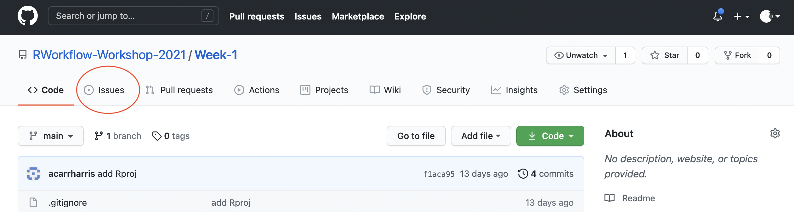
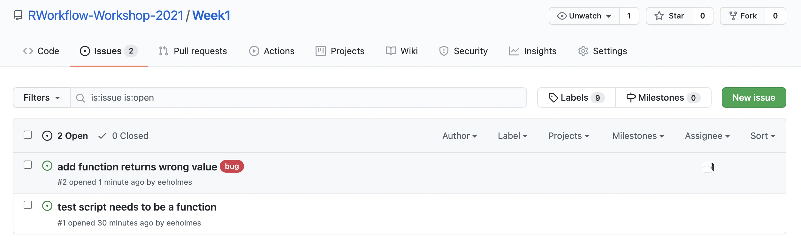
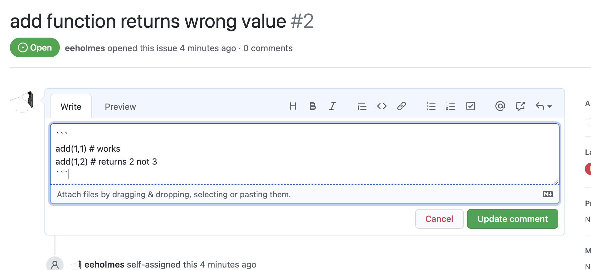

GitHub Basics
| Compartmentalized | Documented | Extendible | Reproducible | Robust |
Overview
Key GitHub.com skills.
- How to use issues.
- How to use releases.
- A production workflow (what I do).
- How to use organizations—for yourself or a team.
- How to set things up in your shared repository in order to work as a small team.
Key GitHub skills
Issues
- Use the Issues in GitHub to enter any issues (bugs, feature changes, notes).


- Add code to your issue so you can easily recreate the problem.

- You can reference issues in your commits with #
Releases
- The release or tag feature in GitHub will help you go back in time and document working states
- Use a NEWS file to keep a notebook of all your major changes.
Pro tip checkout the state of the repository at the time of a release. From the terminal:
git checkout v1.0When done:
git switch -Warning git checkout ... will change all your time stamps.
My production workflows
I develop on the main branch as long as I can break work into small tasks. The versions that users use are either CRAN releases or GitHub releases. I warn them that the main branch is a development branch and might be broken.
Workflow with small tasks

Workflow when I might break things
A major re-organization or new functionality that has the potential to break things is done on a branch.

Organizations
I use this to organize collections of repositories. Example: https://github.com/eeholmes
- Share access to repos across a team
- Have team discussions
- Have a organization landing page
Pro tip: Using GitHub Actions
You may have heard about them. Let’s see it in action. We make a GitHub Action that will update our Readme file whenever a relevant change happens. We’ll see a bigger example next week with RMarkdown reports.
To set up our action:
- Create a .github folder in our repo
- Create a workflows folder in the .github folder
- Create a file
render-readme.ymlwith the instructions for what to do to make the Readme.md file.
Our yml file has a set of instructions to the server that is going to do the work.
on:
push:
paths:
- README.Rmd
- test.csv
name: Render README
jobs:
render:
name: Render README
runs-on: macOS-latest
steps:
- uses: actions/checkout@v2
- uses: r-lib/actions/setup-r@v1
- uses: r-lib/actions/setup-pandoc@v1
- name: Install packages
run: Rscript -e 'install.packages(c("rmarkdown", "knitr"))'
- name: Render README
run: Rscript -e 'rmarkdown::render("README.Rmd", output_format = "md_document")'
- name: Commit results
run: |
git commit README.md -m 'Re-build README.Rmd' || echo "No changes to commit"
git push origin || echo "No changes to commit"